Theorem frac_cancel_numer_left of type Forall¶
from the theory of proveit.numbers.division¶
see dependencies
In [1]:
import proveit
# Automation is not needed when only building an expression:
proveit.defaults.automation = False # This will speed things up.
proveit.defaults.inline_pngs = False # Makes files smaller.
%load_theorem_expr # Load the stored theorem expression as 'stored_expr'
# import the special expression
from proveit.numbers.division import frac_cancel_numer_left
In [2]:
# check that the built expression is the same as the stored expression
assert frac_cancel_numer_left.expr == stored_expr
assert frac_cancel_numer_left.expr._style_id == stored_expr._style_id
print("Passed sanity check: frac_cancel_numer_left matches stored_expr")
In [3]:
# Show the LaTeX representation of the expression for convenience if you need it.
print(frac_cancel_numer_left.latex())
In [4]:
frac_cancel_numer_left.style_options()
Out[4]:
In [5]:
# display the expression information
frac_cancel_numer_left.expr_info()
Out[5]:
| core type | sub-expressions | expression | |
|---|---|---|---|
| 0 | Operation | operator: 1 operand: 3 | 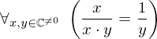 |
| 1 | Literal |  | |
| 2 | ExprTuple | 3 | 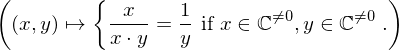 |
| 3 | Lambda | parameters: 25 body: 4 | 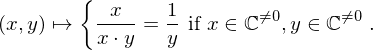 |
| 4 | Conditional | value: 5 condition: 6 | 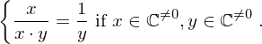 |
| 5 | Operation | operator: 7 operands: 8 | 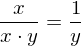 |
| 6 | Operation | operator: 9 operands: 10 | 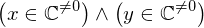 |
| 7 | Literal |  | |
| 8 | ExprTuple | 11, 12 | 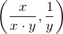 |
| 9 | Literal |  | |
| 10 | ExprTuple | 13, 14 | 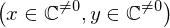 |
| 11 | Operation | operator: 16 operands: 15 | 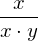 |
| 12 | Operation | operator: 16 operands: 17 | 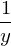 |
| 13 | Operation | operator: 19 operands: 18 | 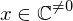 |
| 14 | Operation | operator: 19 operands: 20 | 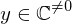 |
| 15 | ExprTuple | 26, 21 | 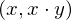 |
| 16 | Literal |  | |
| 17 | ExprTuple | 22, 27 | 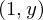 |
| 18 | ExprTuple | 26, 23 | 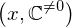 |
| 19 | Literal |  | |
| 20 | ExprTuple | 27, 23 | 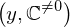 |
| 21 | Operation | operator: 24 operands: 25 |  |
| 22 | Literal |  | |
| 23 | Literal |  | |
| 24 | Literal |  | |
| 25 | ExprTuple | 26, 27 |  |
| 26 | Variable |  | |
| 27 | Variable |  |